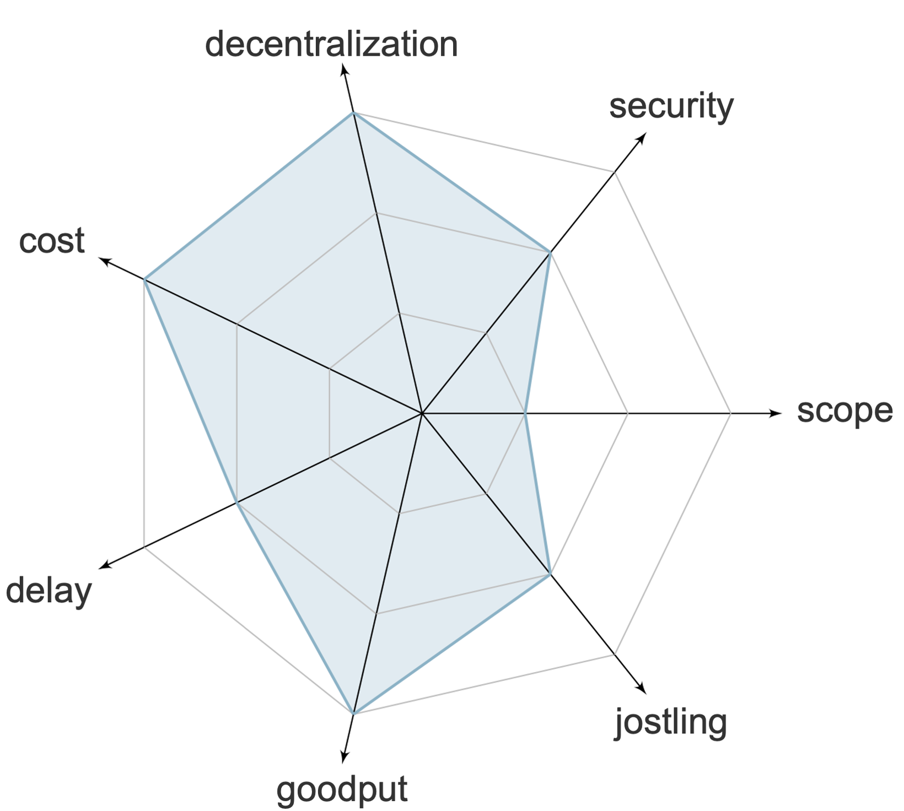

Positives

- No impact on decentralization
- No increase in transaction cost
- Unchanged blockchain's goodput
- Unchanged blockchain's transaction ordering

Negatives

- Scope limited to specific applications
- Slight transaction delay increase
- Increased competition among similar transactions